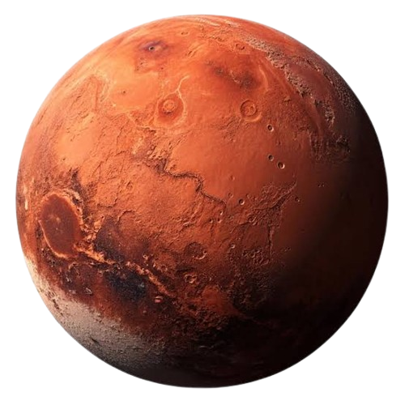

🔴
Por que é vermelho?
Marte possui uma grande quantidade de óxido de ferro em seu solo, semelhante à ferrugem, que dá ao planeta sua aparência avermelhada.
Zeus chegou a Marte! Depois de atravessar Vênus, ele encontrou uma antiga estação de pesquisa abandonada. Agora precisa explorar o terreno para encontrar um dispositivo de comunicação perdido.
EXPLORAR MARTE
Marte possui uma grande quantidade de óxido de ferro em seu solo, semelhante à ferrugem, que dá ao planeta sua aparência avermelhada.
Marte abriga o Monte Olimpo, o maior vulcão conhecido do Sistema Solar, com aproximadamente 22 km de altura.
O planeta possui dois satélites naturais: Fobos e Deimos. Eles são menores que a nossa Lua.
Uma antiga estação de pesquisa foi abandonada em Marte. Durante a exploração, um dispositivo de comunicação desapareceu.
Leia as informações antes de procurar o objeto.
O dispositivo possui uma pequena luz azul.
Ele está próximo de uma formação rochosa.
Observe principalmente a região inferior direita do cenário.
Explore a paisagem abaixo e clique no dispositivo de comunicação escondido.
Excelente trabalho! Zeus encontrou o dispositivo de comunicação escondido entre as rochas.
Ao recuperar o equipamento, ele conseguiu acessar uma mensagem deixada por um dos colegas desaparecidos.
A transmissão revelou novas coordenadas. Zeus está mais perto de encontrar sua equipe!